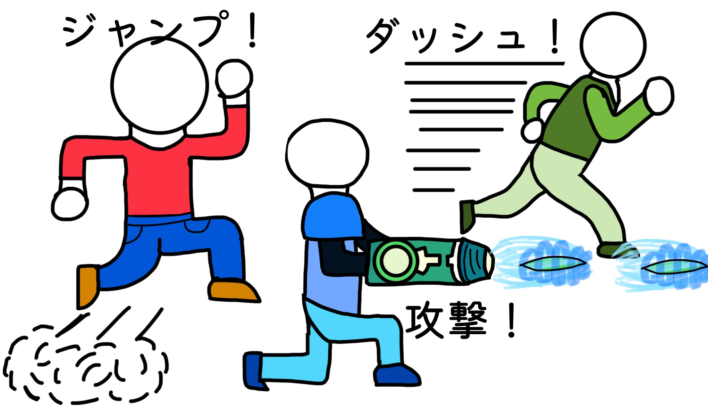

Godotのチュートリアル未完走でゲームを作ってみた話 Part1
みなさんはBlenderを使っていますか？現在（2025/07/03）私は永遠とキャラクターのモデルを作り続けています。進んでないわけではないのですが、ずっと同じことをやっている気がします。ゲーム制作を行なってるみなさんも気をつけるべきだと思います。
〜注意事項〜
この記事は、「条件分岐」や「関数」など、プログラミングの基本的な概念を知っていることを前提に書かれています。
基礎的な内容にはあまり触れていないため、もしそういった知識がまだない場合は、入門向けの記事を先に読むことをおすすめします。（今はちょっと余裕がなくて書けていませんが、今後は初心者向けの記事も投稿する予定です。お楽しみに！）
また、すでにC#をしっかり理解している方にとっては、退屈な内容に感じられるかもしれません。
ですが、初心に戻って基本の意味を改めて確認してみるのも、新しい発見につながるかもしれません。
~Day1 2025/6/23~
環境構築も終わりましたし、ゲーム制作の方に入っていこう！
…と言いたいところですが、何を作るか決まってすらいないのに、いきなり制作を始めるなんてできません。ということで、まずは
アイデアづくり① ー ジャンルを考える
何がいいでしょうか？
やっぱり、マリオとかカービィみたいな2D横スクロールアクションが作りやすそうだし王道っぽい。
でもちょっと憧れちゃうのは3Dアクション。立体的な空間で、自由に動き回れるゲームとかいいなぁ。
じゃあ一回、候補をざっと書き出してみます：
- 2D横スクロール
- 3Dアクション
- シミュレーション
3Dアクションと2D横スクロールで正直めっちゃ迷ってる。
3Dの世界で縦横無尽に動き回って、ボスとバトルとか…想像しただけでめっちゃ楽しそう。でも初心者が作るって言ったら、やっぱり2Dアクションゲームが現実的だしなあ……。
いっそのこと、混ぜてしまえば？
そうだ、もう混ぜちゃおう。2Dベースで操作はシンプルに。
でも、背景や演出はちょっと3Dっぽくして、ボス戦だけ急に立体感が出てくるとか――「見た目はシンプル、でも奥行きのあるゲーム」って、作れたらめっちゃ面白そうじゃない？
じゃあ、2.5Dアクション横スクロールゲームにするっていう方向でやってこう！
アイデアづくり② -ゲームの要素-
ゲームにするからどういう要素があるかとか決めていこう。
 まず、横スクロールゲームだから、左右移動、ジャンプは必須だよね。二段ジャンプとかもできたら面白そうだな。攻撃だけど1種類とか2種類だと物足りなさそうだから10種類くらい作っちゃう。通常攻撃、通常弱攻撃、通常上攻撃、ため攻撃、強攻撃、上強攻撃、強ため攻撃、あとは必殺技とかかな。まあプレイヤーはこのぐらいにしておこう。
まず、横スクロールゲームだから、左右移動、ジャンプは必須だよね。二段ジャンプとかもできたら面白そうだな。攻撃だけど1種類とか2種類だと物足りなさそうだから10種類くらい作っちゃう。通常攻撃、通常弱攻撃、通常上攻撃、ため攻撃、強攻撃、上強攻撃、強ため攻撃、あとは必殺技とかかな。まあプレイヤーはこのぐらいにしておこう。
横スクロールゲームの敵って1種類か2種類の攻撃しかしてこないよね。でもその方がギミックとして使いやすいけど、5種類くらい攻撃できるやつがいても面白そう。
ステージとかどういう感じにしようかな。カービィとかマリオみたいに区切りをつけてステージを移動するか。それか1つのでっかいマップにしてその中を探索するとか。広いマップで探索できるようにしたら面白いね。
 やっぱり王道のコインは必要だよね。でもコインがあるってことはそれを消費しなければならないわけだ。何で消費させるか......スキルとか？それか服を買えるようにしてコスチュームを変えられるようにしたらどうかな。面白そうだけど、技術的に難しそうだな。じゃあ、武器を買って自分をアップグレードできるようにしたらどうだろう。例えば、今まで持ってた竹刀で攻撃すると攻撃力は+10しか足されないけど、鉄の剣にしたら攻撃力が+100されるみたいなふうにしたらいいんじゃね？武器のアップグレードはモデリングが服よりは簡単にはなるが、技術的難易度は変わらないかな。
やっぱり王道のコインは必要だよね。でもコインがあるってことはそれを消費しなければならないわけだ。何で消費させるか......スキルとか？それか服を買えるようにしてコスチュームを変えられるようにしたらどうかな。面白そうだけど、技術的に難しそうだな。じゃあ、武器を買って自分をアップグレードできるようにしたらどうだろう。例えば、今まで持ってた竹刀で攻撃すると攻撃力は+10しか足されないけど、鉄の剣にしたら攻撃力が+100されるみたいなふうにしたらいいんじゃね？武器のアップグレードはモデリングが服よりは簡単にはなるが、技術的難易度は変わらないかな。
 ストーリーとかどうしようか。やっぱりつけた方がいいかな。でも今作は作る方に集中したいからなくていいか。でもつけたいなぁ......じゃあ、モードとかを2つにしてストーリーありとなしを分けたらいいんじゃない。片方のモードはストーリーがなくて純粋にアクションを楽しむ。もう片方はストーリーがあってそれを楽しみつつもアクションを楽しむっていうふうにしたらいいんじゃない？いいね。そうしよう。ストーリーは後で考えよう。
ストーリーとかどうしようか。やっぱりつけた方がいいかな。でも今作は作る方に集中したいからなくていいか。でもつけたいなぁ......じゃあ、モードとかを2つにしてストーリーありとなしを分けたらいいんじゃない。片方のモードはストーリーがなくて純粋にアクションを楽しむ。もう片方はストーリーがあってそれを楽しみつつもアクションを楽しむっていうふうにしたらいいんじゃない？いいね。そうしよう。ストーリーは後で考えよう。
じゃあ、今考えた要素をまとめよう。
左右移動 / ジャンプと二段ジャンプ / 攻撃は10種類 / 広大なマップを探索する / コイン→武器を買って自分の攻撃力とかをグレードアップ / ストーリーなしのアクションを楽しむモード・ストーリーを楽しむモード
じゃあ、これを軸に明日からゲームを作っていこう！
~Day2 2025/6/24 -初めての自力コーディング- ~
よし！じゃあ、早速作っていこう。まずはどういう順番で何を作っていくかを決めよう。今最低限プレイヤーに必要なのは、
- 左右移動
- ジャンプ
- 二段ジャンプ
- 攻撃
優先順位をつけて整理してみよう！でも、この順番でいいや。まずは左右移動から作っていこう。とその前に、PlayerのSceneの方を作っていこう！
まずはCharacterBody3Dを追加していこう！

Godot使うなら絶対に知っておけ！ - CharacterBody3Dってなんだ！
CharacterBody3Dはプレイヤーキャラクターや敵キャラクターのような能動的に動く存在を制御するために設計されたNodeです。特に「重力やジャンプ、移動」といったゲームでよくキャラクターが使う動きを簡潔に記述できるように作られているのが特徴です。
CharacterBody3Dは、物理ベースの移動を行うための"Velocity"プロパティと、衝突を考慮しながら移動を処理する"MoveAndSlide()"メソッドを標準で備えています。これらをうまく活かすことで、重力や床との滑りなどの基本的なキャラクターの挙動が自然に再現できます。
つまり、CharacterBody3DやRegidBody3D以外のテキトーなNodeを使って動きをプログラミングするよりもCharacterBody3Dを使う方が楽に移動、ジャンプを作ることができる且挙動が自然になるのです。まあ、最初はプレイヤー、敵を作る時に使うのはCharacterBody3Dくらいのノリで覚えておいてください。

次にCollisionShape3Dを追加します。
これを知らなきゃ話にならない。CollisionShape3Dって何？
CollisionShape3Dは、物理演算を行うための形状情報を与えるためのNodeです。つまり、Godotにおける「当たり判定の形＝Shape」を定義するNodeです。単体では機能せず、CharacterBody3DやRigidBody3D、Area3Dなどの物理Nodeの子として使われます。親Nodeに"どの範囲に当たり判定を持たせるかを教える"役目を果たしています。
これがないと例えば重力を作ったとしても床をすり抜けて落ちていっちゃうとかそういうふうになります。CharacterBody3DやRigidBody3D、Area3Dとセットで追加するというふうに思っていればOKです。

最後にMeshInstance3Dを追加していきます。
これをなくしてゲームは成り立たない。MeshInstance3Dとは何者？
MeshInstance3Dは、Godotで3Dモデルをシーン上に表示するために使うNodeです。
わかりやすくいうと、親Nodeに「視覚的な形状＝メッシュ＝"見た目"」を表示させるNodeです。
たったこれだけです。ただ単に見た目を作るだけ、ただそれだけです。CharacterBody3DまたはArea3DなどとCollisionShape3DとMeshInstance3Dのこの3セットを追加すると思っておけばいいと思います。これなら最低限の動きは作れるでしょう。
さあ、長ったらしい解説はここまでにして、早速スクリプトをアタッチしていきましょう！
プレイヤーをコーディングだ！
using Godot;
using System;
public partial class player_magic : CharacterBody3D
{
[Export]
public float Speed = 5.0f;
private Vector3 direction = Vector3.Zero;
public override void _PhysicsProcess(double delta)
{
if (Input.IsActionPressed("moveRight"))
{
direction.X += 1;
}
if (Input.IsActionPressed("moveLeft"))
{
direction.X -= 1;
}
Velocity.X = direction.X * Speed;
MoveAndSlide();
direction = Vector3.Zero;
}
}
このコードはチュートリアルを参考にしながら作りました。序盤の基本的な動作とかの導入は結構チュートリアルが役立つと思うので、覚えておくといいでしょう。ではコードの解説に写っていきます。
using
using Godot;
using System;
GodotでC#を使うとき、using Systemとusing Godotを最初に書くことで、C#の標準機能やGodotのゲーム開発に必要なクラスを簡単に使えるようになります。Systemは基本的な操作（リストやファイル操作など）を提供し、Godotはゲームに必要なクラス（NodeやVector2など）を提供します。他にも、特定の機能を使いたいときにusingで追加することができます。
めちゃくちゃわかりやすくいうと、Systemっていう名前のおもちゃの箱とGodotっていう名前のおもちゃの箱があるとします。using Systemと書くとSystemの箱の中の"おもちゃ＝コード"を"using=使える"ようになります。using Godotと書くと、"Godotの箱の中の"おもちゃ＝コード"が"using=使える"ようになるという感じです。
-変数について-
[Export]
public float Speed = 5.0f;
private Vector3 direction = Vector3.Zero;
[Export]っていうのはその下にある変数をパラメーターにする時に使う、いわゆる呪文とかおまじないってやつです。この[Export]と入れることで一回一回コードを書いてエディター上で数字を変えるという作業をしなくても、開発エンジンのインスペクタ上から自由に数値を変えることができるようになります。SpeedやGravity（重力）など、頻繁に調整することのある変数をパラメーター化しておくと便利です。
次に、publicとprivateについて説明します。先に言っておきますが、Godotでゲーム開発をする場合、どちらを使うかを気にする必要はあまりありません。私はアプリ開発もしているため、感覚を忘れないように意識的に使い分けていますが、Godot内での挙動には特に違いはありません。実際、C#ではprivateにした変数は他のスクリプトがアクセスできなくなり、publicにした変数は外部からもアクセスできるという意味があります。しかし、GodotのC#スクリプトでは、publicでもprivateでも、インスペクタからのアクセスに違いはありません。そのため、Godotで開発する場合、publicやprivateは、コードの外部アクセスを意識する場合にだけ使うくらいで大丈夫です。変数を作ったり、関数使ったりするときにとりあえずつけておくものと思っていてください。
変数を作る時には次のようにコードを打ちます。
public [型名] [変数名] = [数値];
このpublicやprivateの後に来ているのが型名です。型名はたくさんありますが、ゲーム開発やアプリ開発でよく使うものをいくつか紹介しましょう。
- int：ただの整数。（1,2,3,4,5...）
- float：小数点付きの数字。（1.2f,4.1f,99.99f....）
- string：文字列（こんにちは、HelloWorld...）
- character：1文字（A,B,C,あ,い,う...）
- bool：trueかfalseのどちらか
- Vector2：2次元の座標（x,y)
- Vector3：3次元の座標(x,y,z)
これらは頭に絶対に入れておいてください。C#でやる場合は特に。C#はオブジェクト指向型のプログラミング言語なので、変数の作成や変数への代入時にはどの型か指定する必要があります。例えば、numberという変数に8.2を代入する場合、public float number = 8.2f;というふうに描きます。ここで重要なのは、数値や変数に型を指定しないとエラーが起きるという点です。例えば、float型に整数を代入したり、int型に小数点を代入しようとすると、コンパイラが「型が一致しません」とエラーを出して、コードが正常に動作しません。これを回避するために、適切な型を使うことが大切です。
public float Speed = 8.0f;
public float Speed = 8.0f;
_PhysicsProcess
public override void _PhysicsProcess(double delta)
{
//ここに処理を書く
}
public override void _PhysicsProcess(double delta)は、物理演算用の処理を実行するための関数です。固定フレーム間隔で処理が実行します。
ゲームの実行環境が変わっても一定のフレームレートで動作してくれるので、物理演算に向いています。
MoveAndSlide()
MoveAndSlide();
MoveAndSlide()はゲームエンジンでよく使われる移動メソッドです。主にキャラクターの移動やオブジェクトの移動処理に使われます。普通に位置を変えるだけでなく、「滑るような動き」や「壁や床との衝突判定」を自動的に処理してくれるのが特徴です。
この関数はCharacterBody3DとRigidBody3Dだけでのみ使える関数です。CharacterBody3DやRigidBody3Dでもキャラクターやオブジェクトの移動の処理をさせるときに移動処理の後に書くものと思っておいてください。
このコードを実行すると...
public override void _PhysicsProcess(double delta)
{
if (Input.IsActionPressed("moveRight"))
{
direction.X += 1;
}
if (Input.IsActionPressed("moveLeft"))
{
direction.X -= 1;
}
Velocity.X = direction.X * Speed;
MoveAndSlide();
direction = Vector3.Zero;
}
実はこのコードをビルドすると実は以下のようにエラーが出ます。
CS1612: 変数ではないため、'CharacterBody3D.Velocity' の戻り値を変更できません /Users/******/GodotProject/BaRont/player_magic.cs(22,3)===>Velocity.X = direction.X * Speed;
これは構文が間違っているため出たものです。CharacterBody3Dが元々持っているメソッドVelocityに.Xや.Yなどのプロパティをつけることはできないのでエラーが出ました。これはVelocity.X = direction.Xとするのではなく、Velocity = directionとする必要があります。
Day2終了時点でこのことには気づいてなかったのでDay3で直しました。
~Day3 2025/6/25 -ゲーム開発は甘くない-~
では、早速昨日言ったところを修正していきましょう！
public override void _PhysicsProcess(double delta)
{
if (Input.IsActionPressed("moveRight"))
{
direction.X += 1;
}
if (Input.IsActionPressed("moveLeft"))
{
direction.X -= 1;
}
Velocity = direction * Speed;
MoveAndSlide();
direction = Vector3.Zero;
}
こうすることで正しく左右に移動します！ってことで前回（Day2）解説していなかったところを解説していきます！
Input
Input.IsActionPressed("moveUp")
Input.IsActionPressed("moveUp") は、プレイヤーが「moveUp」という名前の入力アクションを押している間、true を返し、押していないときにfalseを返す関数です。
moveUpはインプットマップと呼ばれる操作方法の設定の画面で決めることができます。後ほど説明します。
正しいコードの仕組み
このコードではどのようにしてキャラクターを動かしているかを解説します。
1. public override void _PhysicsProcess(double delta)でマイフレーム描画するように指定します。
2. if(Input.IsAvtionPressed("move ****")でmove****を検知します。
3. 検知したらdirection（=方向）に1を増やしてdirection=(1,0,0)にします。
4. VelocityにdirectionにSpeedをかけた数字を代入します。
5. MoveAndSlide()でオブジェクトを動かすということです。

ここまでだけで動きそうですが、このあとが重要です。
6. 最後にdirectionをリセットすることでボタンを押したら永久に動き続けることを防止します。
この6.がないと、directionは1となり、リセットされないため、永遠と動き続けることになります。まあ、ここでこのあと始まるジャンプの実装時に起こる問題の原因となるのですがね。この時は知らないので。
全ての始まり、重力
じゃあ、左右移動の次はジャンプの仕様を作っていきます。ジャンプは重力という要素が必須なので、まずば重力から作っていきましょう。
using Godot;
using System;
using System.Globalization;
public partial class player_magic : CharacterBody3D
{
[Export]
public float Speed = 1.0f;
[Export]
public float Grabity = 1.0f;
private Vector3 direction = Vector3.Zero;
public override void _PhysicsProcess(double delta)
{
//省略
if (IsOnFloor() == false)
{
direction.Y -= Grabity;
}
else if (IsOnFloor() == true)
{
direction.Y = 0;
}
Velocity = direction * Speed;
GD.Print(Velocity);
MoveAndSlide();
direction = Vector3.Zero;
}
}
1発でエラーとかバグが起こらずに完成できました。ではコードの解説の方に移ります。
[Export]
public float Grabity = 1.0f;
ここでGrabityを宣言しつつ、パラメーター化しています。結構作っている途中で変えたくなるのでね。
if (IsOnFloor() == false)
{
direction.Y -= Grabity;
}
else if (IsOnFloor() == true)
{
direction.Y = 0;
}
ここで重力の処理を行っています。IsOnFloor()という関数を使って床に触れているかを検知し、触れていなかったら、directionのYをGrabityずつ減らしていき、落下。触れている時はdirectionを0にして落下しないようにするという感じです。
MoveAndSlide();
最後にMoveAndSlide()でdirectionを動きに反映して重力の処理をするという感じです。
地獄のジャンプ実装
重力もできたので、早速ジャンプの方作っていきましょう！
まずはジャンプ力っていうかジャンプ時の上昇量を決めましょう。おそらくこの変数は頻繁に変えることになるので、[Export]でパラメーター化しちゃいましょう！
[Export]
purlic float JumpPower = 1.0f;
パラメーターにする数字は初期値を入れるかテキトーな数字を入れるとかしておいてください。私は初期値を入れました。
では次に、ジャンプをする仕組みを作っていきましょう。
一回ジャンプがどのようにされているか整理してみましょう。
1. ジャンプするボタンを押した時に上方向への力を加える
2. 下方向への力は加え続ける
基本的にこれだけで自なジャンプはできます。

では早速これをコードにしていきましょう。
if (IsOnFloot() && Input.IsActionJustPressed("Jump"))
{
direction.Y = JumpPower;
}
このコードを説明すると、地面に触れている且つジャンプボタンが押されたら、direction.YをJumpPowerにするというものです。&&が且つという意味で、左右にある関数がどちらもtrueを返したら、trueを返します。（なんか小泉構文みたいですね。）また、少なくとも一方がfalseだったら、falseになります。これらを論理演算子と言うのですが別の記事でじっくりと説明しようと思いますので出てきたら簡単な説明をすると言うふうにしようと思います。
ではこれで動かしてみましょう。
あれ？おかしいですね。ジャンプしてくれません。
では、原因究明のためにdirectionがどうなっているかみてみましょう。コードの一番最後で
GD.Print(direction.Y);
これを入れることでコンソールにdirectionのYの数字を見ることができます。この状態でビルドするどうなるでしょう。

全部0ですね。ここから推測するに、おそらく、コードの1番最後のこのコードが邪魔をしているのではないでしょうか。
direction=Vector3.Zero;
このコードはマイフレーム、directionを0にしています。つまり、自分の想定では上方向への力JumpPower分の力が入り上へ飛んでいくのですが、directionがすぐに0になるため、上へ押す力がリセットされてしまうと推測されます。では次回、最後のコードを消してみようと思います。
~ 締め~
今回はゲームの方向性を決めた後、左右移動の仕組みを作りました。
ただ、このコードには誤りがあったため、明日（Day3）で修正します。
本当はDay2〜Day7までをまとめて1記事にする予定でしたが、想定以上に解説が長くなってしまったので、今回はDay2とDay3
だけの記事としてお届けします。
次回はジャンプや二段ジャンプの実装にチャレンジするので、どうぞお楽しみに！
それでは、バイバイ！